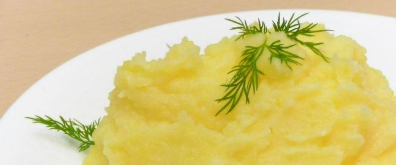

Пюре

Почистить и отварить картошку, слить воду.
В отдельной кастрюльке закипятить молоко с кусочком сливочного масла.
Картошку помять с молоком, укропом или прикпраой для картошки. (пюре будет нежнее, если после давилки воспользоваться миксером).